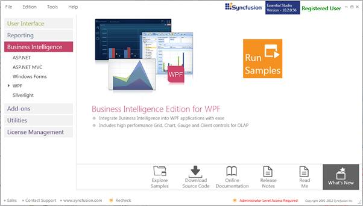
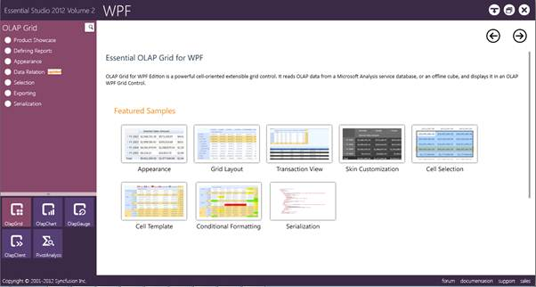
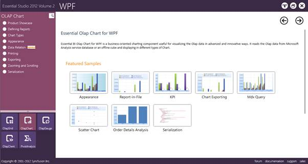

This section covers the location of the installed samples and describes the procedure to run the samples through the sample browser and online. It also provides the location of the source code.
Samples Installation Location
The OLAP Chart samples are installed in the following location, locally on the disk:
C:\Syncfusion\<Version Number>\BI\WPF\OlapChart.WPF\Samples
Viewing Samples
The steps to view the samples are as follows:
1. Click Start -> All Programs -> Syncfusion -> Essential Studio <version number> -> Dashboard -> Syncfusion Essential Studio Dashboard <version number> -> BI.

Figure 2: Syncfusion Essential Studio Dashboard BI
2. On the Dashboard window, click Run Samples for WPF under BI Edition panel. The BI WPF Sample Browser window will be displayed.
 Note: You can view the samples in any of the
following three ways:
Note: You can view the samples in any of the
following three ways:
· Run Samples - Click to view the locally installed samples.
· Online Samples - Click to view online samples.
· Explore Samples - Explore BI WPF samples on the disk.

Figure 3: BI WPF Sample Browser
3. Select OLAP Chart. OLAP Chart samples are displayed.

Figure 4: OlapChart Tab in Syncfusion BI WPF Sample Browser
4. Select any sample and browse through the features.
Source Code Location
The default location of the OLAP Chart source code is the following:
[System Drive]:\Program Files\Syncfusion\Essential Studio\[Version Number]\BI\OlapChart.WPF\Src